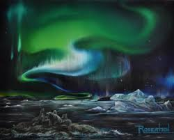

APPRECIATING THE ONE YOU LOVE
THANK YOU IS A SMALL WORD BUT MEANS A LOTs
And I appreciate the sweet, embarrassing photos and stories about my boyfriend that you all share with me! Even if it is by a photo, I have a glimpse of what his life has always been like thanks to each and every one of you individually.
Thank you for sharing your special moments in life with me.
You don't ever have to, but you invite me anyway. Whether it's just a family gathering, a birthday, or a holiday, I am thankful to have spent those times celebrating these moments in life alongside such amazing people. It's humbling and heartwarming to be a part of memories so unforgettable that you all share and that you have welcomed me to be a part of. They are days that I will never forget and have a place in my heart forever.
Thank you for always being there for me.
Since we have started dating, I have watched the way that you guys love him. I have watched the individual relationships and moments that you share with him make a difference in who he is. I have seen you all love and support him, no matter what he was doing.
With everything that comes along in life, this has been a simple reminder of an unconditional, loving, sacrificing family that is also the best support system. You are not only impacting him, but me, too.
Thank you for welcoming me in like your own.
You have become a very special person in my life and I can't thank you enough for what we have gone through in life and the thank for introducing me to yo lovely family . Today, I catch myself wondering why I even worried in the first place. You all have welcomed me in your own ways and made me feel right at home. It is not always easy to do that with just anyone, but you have all taken the time to get to know me. And now I know that if I ever needed anything, I can call one of you.
Thank you for letting me date you.
I am most thankful for this. Thank you for sharing him with me and giving me a chance to show you all how important he is to me. I never thought that I would luck out and meet someone as special, kind, and wonderful as he is, but I did.
You have supported our relationship, given me a chance to love him, and welcomed me to new adventures in love and family. I have the utmost gratitude for each of you. You are the most wonderful, welcoming, and loving family.
I am overjoyed to be able to experience just a glimpse of this life with you and with all of you.
